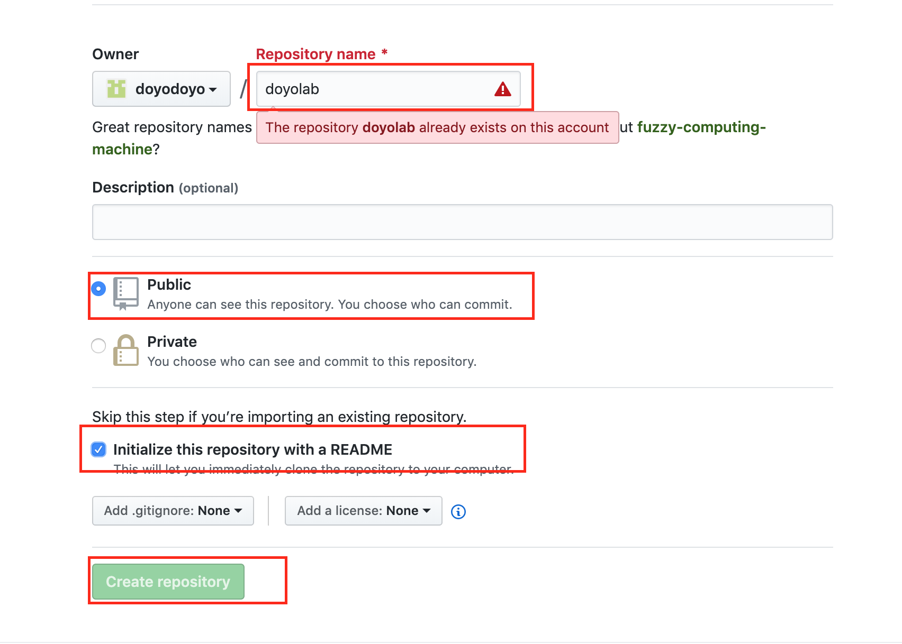
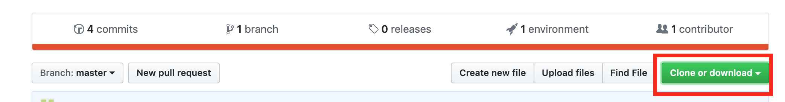

★windowsの人は櫻井さん(2019年3年生)がまとめてくれたページを参照してください。
ターミナルとはコマンドでPCを操作する画面です
DockからLaunchpadを選択します
その他を選択します
ターミナルを選択します
gitをやる上でターミナルはよく使うので、Dockに追加しておくといいでしょう。Dockへアプリケーションを追加する方法はここを参照してください。
Homebrewとはmacのパッケージ（ソフト）のインストールを簡単にできるパッケージ管理システムです

ターミナルに下記のコマンドをコピペし、Enterを押すとHomebrewがインストールできます。
しばらく時間がかかるので、待ちましょう。
/usr/bin/ruby -e "$(curl -fsSL https://raw.githubusercontent.com/Homebrew/install/master/install)"
gitとはバージョン管理したり、公開したり、共同作業したりする時に使うソフトです。ゼミでは主にホームページの公開に使っています。
ターミナルで下記のコマンドを入力しEnterを押し、gitをインストールします。
brew install git
フォルダはなんでもいいのですが、わかりやすいようにホームディレクトリにmygitというフォルダを作りましょう。ターミナルを立ち上げて下記のコマンドを入力するとフォルダが作成されます。mkdirはmake directory（ディレクトリ（フォルダ）を作る）の略です。
mkdir mygit
git init
git config --global user.email "自分のメールアドレス"
git config --global user.name "自分の名前(アルファベット)"
GitHubのページでGitHubのアカウントを作りましょう。
アカウント名、メールアドレス、パスワードは忘れないようにしておきましょう。

リポジトリーはフォルダの状態を記憶する場所なのですが、イメージしずらいと思うので、今はフォルダと思っておきましょう。詳しく知りたい人はここを参照してください。
【リポジトリの作成方法】
githubの右上にある+マークをクリックし、New Repositoryをクリックし、新しいリポジトリーを作ります。

下記の画像を参考にdoyolabというリポジトリーを作成します。赤枠のチェッックを入れた後に「Create Repository」を押してください。

リポジトリーのSettingsから下記の設定をします。
https://ユーザー名.github.io/doyolab/ が皆さんのホームページになります。

githubのdoyolabというリポジトリーの中で下記のボタンを押し、リポジトリーのURLをコピーします。 
ターミナルを開いて、下記のコマンドでmygitフォルダに移動します。cdはchange directoryの略です
cd mygit
ターミナルで下記のコマンドを入力し、クローンを作成してください。(URLは上でコピーしたURLです。)
git clone リポジトリのURL
mygitの中にdoyolabというフォルダができて、doyolabフォルダの中にREADME.mdファイルが入っていれば成功です。
htmlを知っている人は自分で作っても構いません。htmlに自信がない人はサンプルファイルをダウンロードして修正しながら自分のページを作ってみましょう。まずはサンプルファイルをダウンロードしてください。ダウンロードしたzipファイルを解凍し、doyolabというフォルダの中身をmygitフォルダの中のdoyolabフォルダの中にコピーしてください。
下記の手順でアップロードしてください。
cd mygit/doyolab
(doyolabフォルダに移動するだけなので、既に移動済みの場合はいらない)
git add .
git commit -m "メッセージ"
git push
自分のページに下のようなページが表示されたら成功です。（すぐに更新されない場合は１分ぐらい待ってから更新してみてください）日々のページを更新するときはこの手順でやってください。